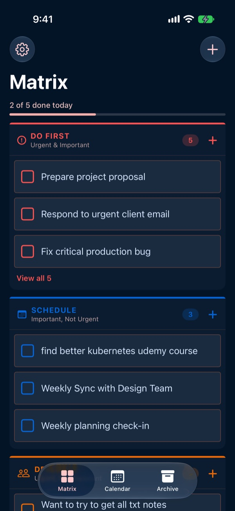
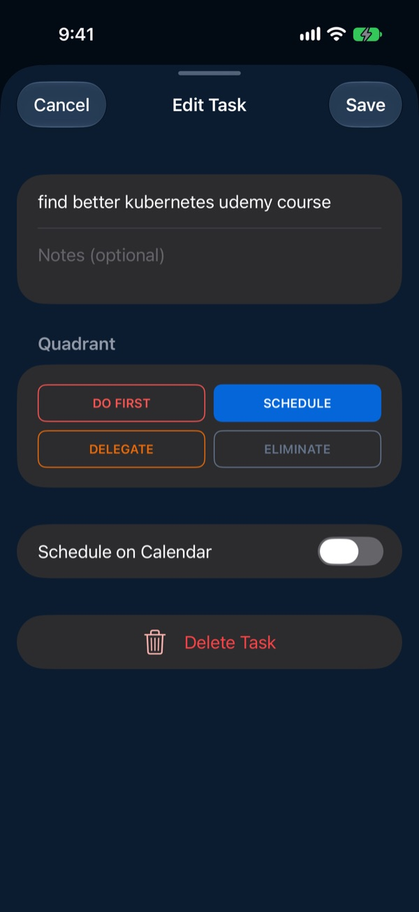
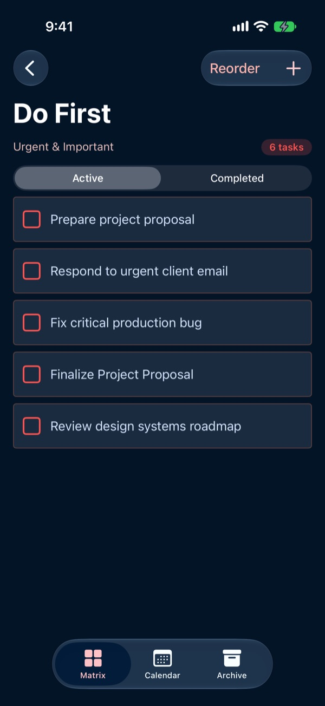
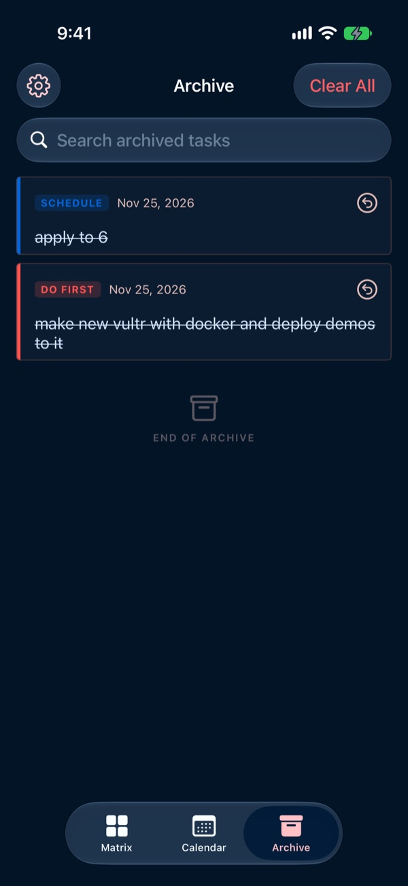
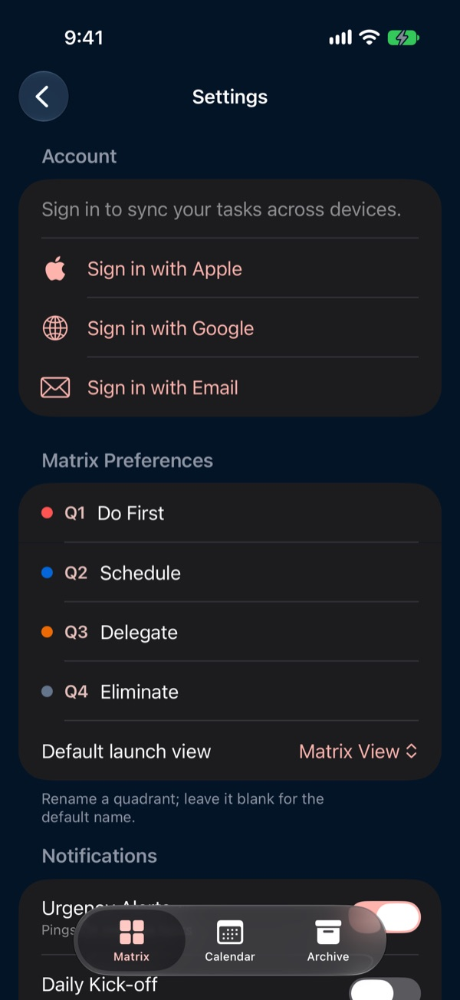

Help & User Guide
Everything you need to get the most out of Matrix Focus on Android, iPhone and Mac.
Choosing a quadrant

Matrix Focus is built on the Eisenhower Matrix. For each task, ask two questions: is it important? and is it urgent?
- Important means it moves your goals or responsibilities forward. Ask yourself: would it matter in a month if I never did it?
- Urgent means it has a real deadline or someone is waiting on it now, not just that it feels pressing.
A common mistake is putting important work in Do First just because it's important. Most of your best work belongs in Schedule: give it a date on the calendar so it gets done before it becomes urgent. Tasks that only feel urgent, like many messages and interruptions, usually belong in Delegate or Eliminate.
Adding and editing tasks

- Add a task: tap the + button on the Matrix, or the add button on a quadrant to start the task in that quadrant.
- Pick a quadrant: the editor has a Quadrant row with four chips. Tap one to choose. New tasks start in Do First unless you added them from a specific quadrant.
- Edit a task: tap it (double-click on Mac) to open the editor.
- Move a task to another quadrant: open it and tap a different quadrant chip, then save.
- New tasks go to the top of their quadrant.
Tap a quadrant on the Matrix to open it full-screen, with Active and Completed tabs.
Completing and deleting

- Complete: tap the checkbox next to a task. On iPhone you can also swipe right.
- Delete: open the task and choose Delete. On iPhone you can also swipe left, and on Mac you can right-click the task.
- Deleting can't be undone. If you just want it out of the way, complete it instead and it moves to the Archive.
Reordering
Open a quadrant and drag tasks to put them in the order you want.
- Android: drag a task by its handle.
- iPhone: tap Reorder, drag the handles, then tap Done.
Dragging only reorders tasks within one quadrant. To move a task to a different quadrant, edit it.
Calendar

Turn on Schedule on calendar in the task editor to give a task a date, and optionally a start and end time. The Calendar tab shows the month; pick a day to see what's scheduled. Scheduled tasks stay in their quadrant on the Matrix too.
Archive

Completed tasks show up in the Archive tab. You can search them, restore a task to bring it back as active, or Clear All to permanently delete everything in the archive.
Daily goal
The Matrix shows “N of 5 done today”. That's your daily goal: how many tasks you want to finish each day, not the number of tasks you have. Change the target in Settings → Set Daily Goals.
Renaming quadrants
Go to Settings → Rename Quadrants to use your own names (for example “Today” instead of “Do First”). Leave a name blank to go back to the default. Renaming only changes the label; each quadrant still means the same thing.
Sign in and sync

You don't need an account. Without one, Matrix Focus works fully offline and your tasks stay on your device.
To keep tasks in sync between Android, iPhone and Mac, open Settings → Account and sign in with Apple, Google or Email. Use the same account on every device.
- Sync runs automatically when you open the app. Tap Sync Now to sync right away.
- Your tasks, quadrant names and daily goal sync. Theme, sound and launch view are per device.
- If the same task is changed on two devices, the most recent change wins.
- Sign Out removes this device's copy of your tasks. They stay in your account and come back when you sign in again.
- Delete Account permanently deletes your account and every synced task on all your devices. This can't be undone.
Other settings
- Theme Mode: System, Light or Dark.
- Sound Effects: a ding when you complete a task and a swoosh when you delete one.
- Default Launch View: open the app on the Matrix, Calendar or Archive.
- Reset Matrix Data: deletes all your tasks. If you're signed in, this also deletes them from your account and every synced device. It can't be undone.
FAQ
My tasks aren't showing up on my other device.
Check that both devices are signed in to the same account in Settings → Account (the sign-in method is
shown next to your email), then tap Sync Now on each. You need an internet connection to sync.
I signed in and my old tasks disappeared.
When you sign in to a different account, that account's tasks are shown. Sign back in to the other
account to see its tasks.
Can I get a deleted task back?
No. Deleted tasks are gone for good. Completed tasks can be restored from the Archive.
Does Matrix Focus collect my data?
Only what's needed to sync if you sign in. No ads, analytics or trackers. See the
Privacy Policy.
Still need help?
Report a bug or ask a question by opening an issue on GitHub. Mention which device you're using (Android, iPhone or Mac) and the app version from the bottom of Settings.